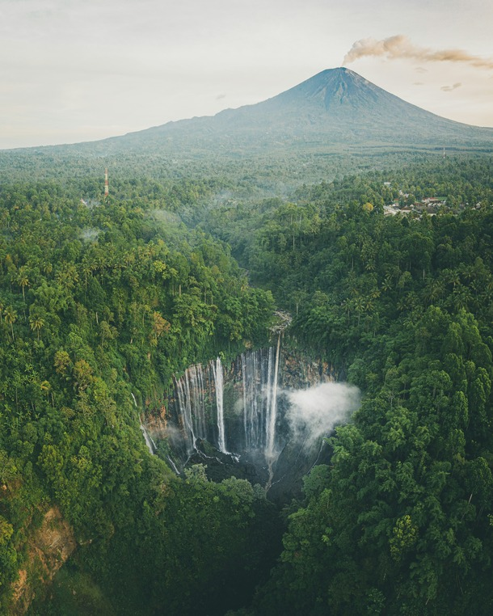

01
Keindahan Alam Yang Memikat
Indonesia, sebagai negara kepulauan terbesar di dunia, menyimpan
keindahan alam yang begitu memikat. Dari puncak gunung yang megah
hingga lautan yang jernih, setiap sudut Nusantara menawarkan pesona
yang tiada duanya. Gunung-gunung seperti Rinjani di Lombok dan Bromo
di Jawa Timur menyajikan panorama luar biasa, terutama saat matahari
terbit dan terbenam, menciptakan pemandangan yang begitu magis dan
menenangkan. Selain itu, pegunungan lain seperti Gunung Semeru di
Jawa Timur dan Gunung Kerinci di Sumatra juga menghadirkan
pengalaman mendaki yang menantang sekaligus mengagumkan, dengan
lanskap alam yang memukau dan udara yang menyegarkan. Di sisi lain,
kekayaan bahari Indonesia tidak kalah menakjubkan. Pantai-pantai
eksotis seperti Raja Ampat di Papua, Pink Beach di Komodo, dan Nusa
Penida di Bali memperlihatkan kejernihan air serta keanekaragaman
biota laut yang menakjubkan. Keindahan bawah lautnya, yang dipenuhi
terumbu karang berwarna-warni dan berbagai spesies ikan tropis,
menjadikan Indonesia salah satu destinasi menyelam terbaik di dunia.
Read more →

02
Keanekaragaman Budaya
Indonesia adalah negara yang kaya akan keanekaragaman budaya, dengan
lebih dari 1.300 suku bangsa yang tersebar di seluruh kepulauan.
Setiap daerah memiliki adat istiadat, bahasa, seni, kuliner, dan
tradisi yang unik, mencerminkan identitas serta warisan leluhur yang
telah diwariskan secara turun-temurun. Keanekaragaman ini bukan
sekadar perbedaan, tetapi juga menjadi kekayaan yang memperkuat
persatuan bangsa dalam harmoni, sejalan dengan semboyan Bhinneka
Tunggal Ika. Bahasa daerah menjadi salah satu aspek penting dalam
kekayaan budaya Indonesia. Dengan lebih dari 700 bahasa yang
digunakan oleh masyarakat di berbagai pelosok negeri, Indonesia
menjadi salah satu negara dengan jumlah bahasa daerah terbanyak di
dunia. Bahasa Jawa, Sunda, Batak, Minangkabau, Bugis, hingga Papua,
masing-masing memiliki karakteristik unik yang mencerminkan nilai
dan tradisi masyarakatnya. Meski beragam, Bahasa Indonesia tetap
menjadi pemersatu, memungkinkan komunikasi yang lancar di antara
masyarakat dari berbagai latar belakang.
Read more →
03
Kuliner Yang Lezat
Kuliner Indonesia dikenal dengan cita rasanya yang kaya dan beragam,
mencerminkan kekayaan budaya serta kearifan lokal di setiap daerah.
Dengan perpaduan rempah-rempah yang melimpah, masakan Indonesia
memiliki rasa yang khas, mulai dari gurih, pedas, manis, hingga asam
yang menggugah selera. Beberapa hidangan ikonik seperti Rendang dari
Sumatera Barat yang dinobatkan sebagai salah satu makanan terenak di
dunia, Soto yang memiliki banyak variasi dari berbagai daerah
seperti Soto Betawi, Soto Lamongan, dan Soto Banjar, Sate dengan
beragam jenis seperti Sate Padang, Sate Madura, dan Sate Lilit khas
Bali, hingga Pempek Palembang dengan kuah cuko yang khas, menjadi
bukti kekayaan kuliner Nusantara. Tak hanya makanan utama, Indonesia
juga memiliki berbagai jenis sayur yang menjadi bagian penting dalam
hidangan sehari-hari. Kangkung, misalnya, adalah salah satu sayuran
yang sangat populer dan dapat ditemukan di berbagai daerah. Kangkung
sering diolah menjadi Cah Kangkung yang ditumis dengan bawang putih
dan cabai, atau dihidangkan dalam bentuk Plecing Kangkung khas
Lombok yang pedas dan segar.
Read more →